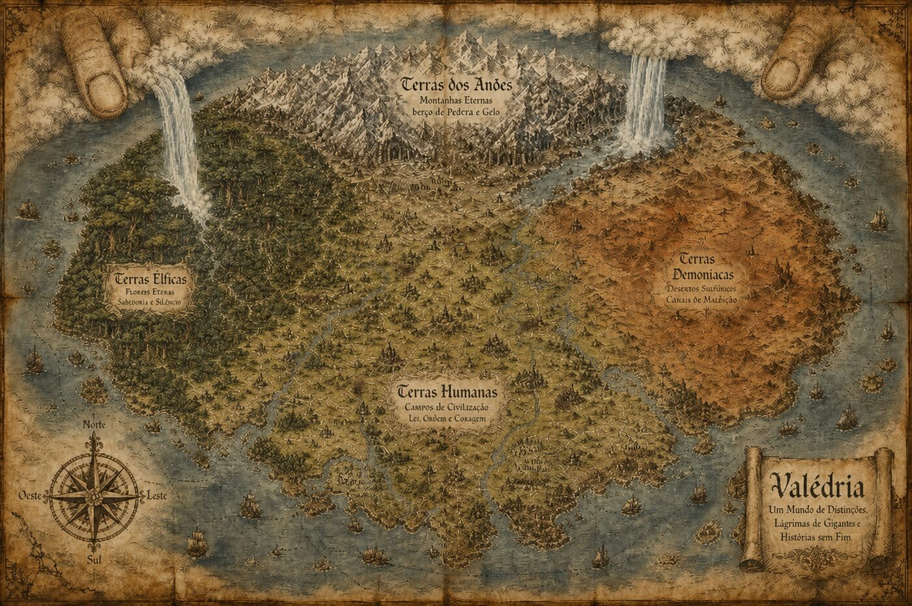

Valédria
O Códice do Mundo reúne geografia, sociedade, magia, aura, itens, bestiário e a guilda de aventureiros de Valédria — tudo em um só lugar, para estudar antes da mesa e para consultar durante o jogo.
Um códice, dez capítulos
Geografia
Os três reinos humanos, Encruzilhada e as terras dos outros povos.
Abrir Livro → IISociedade
Religião, facções, leis, justiça e o calendário de Valédria.
Abrir Livro → IIIEconomia
Moedas, custo de vida e as regras de comércio entre reinos e povos.
Abrir Livro → IVSistema
Atributos, testes, combate, perícias, papéis e progressão de personagem.
Abrir Livro → VRaças
Humanos e suas castas, elfos, anões e as cinco linhagens demoníacas.
Abrir Livro → VIMagia
As sete escolas do Grimório, do Aprendiz ao grau Deus.
Abrir Livro → VIIAura
Os quatro Caminhos marciais e o Fôlego de Aura.
Abrir Livro → VIIIItens
Do item comum às armas lendárias, cada uma com sua condição e maldição.
Abrir Livro → IXBestiário
Vinte e nove feras e monstros, do Lobo das Estradas às criaturas Lendárias.
Abrir Livro → XGuilda
Patentes, recompensas, reputação e o quadro de missões completo.
Abrir Livro →Sua jornada começa em Valédria
Valédria é um continente de reinos em conflito, florestas antigas, montanhas forjadas em ferro e fronteiras onde a magia deixou cicatrizes que o tempo não apagou.
Você não começa como uma lenda. Começa com uma escolha: atravessar uma estrada perigosa, aceitar um contrato da Guilda, proteger uma vila esquecida ou perseguir o rumor de uma criatura que não deveria existir.
Cada cidade tem seus interesses, cada povo guarda sua própria história e toda decisão pode abrir uma nova rota — ou fechar uma porta para sempre. Reúna seus aliados, prepare sua ficha e descubra que tipo de nome será lembrado em Valédria.
Não é uma torre comum. Ela foi construída para manter alguma coisa distante. A questão é: distante de quem?Nessa Corven, aprendiz de estudiosa
Sua ficha, sempre à mão
Criação guiada
Distribua os 10 pontos entre Força, Destreza, Constituição, Sabedoria e Carisma, escolha raça, origem e caminho de poder com uma prévia da ficha em tempo real.
Exportar e importar
Salve sua ficha como um arquivo e recarregue depois — sem depender de login ou de guardar dados no navegador.
Pronta para impressão
Um layout limpo, próprio para imprimir e levar para a mesa.